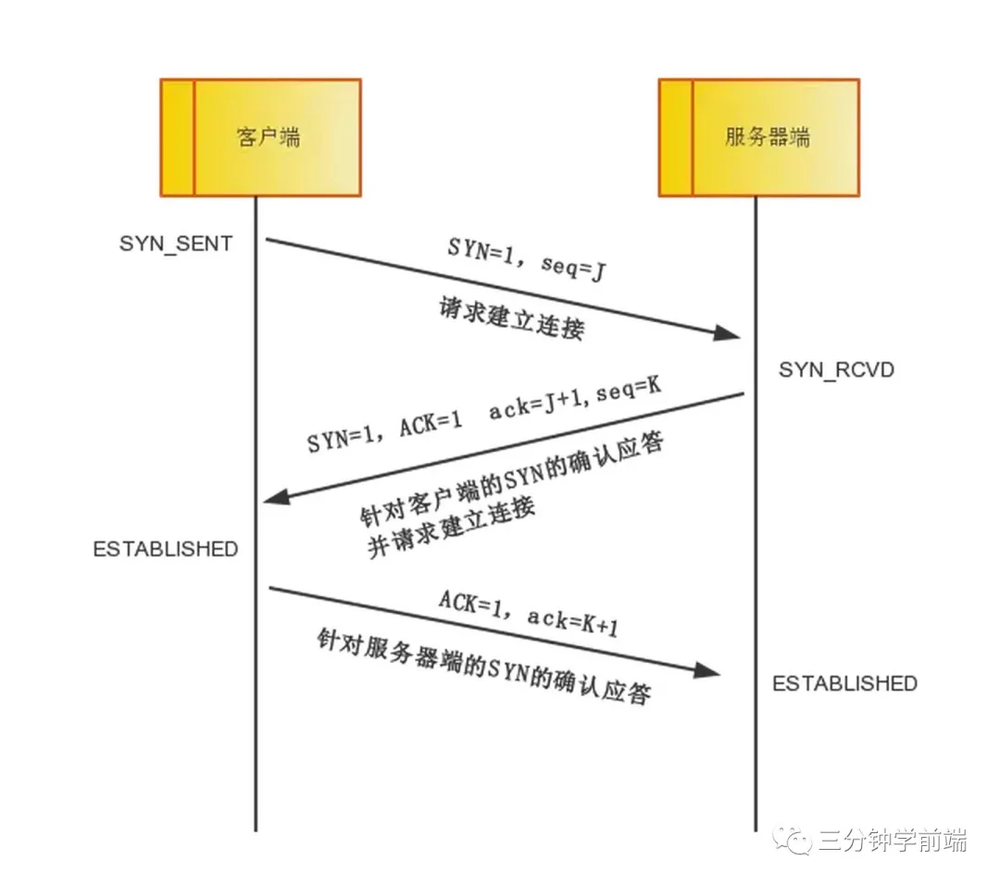
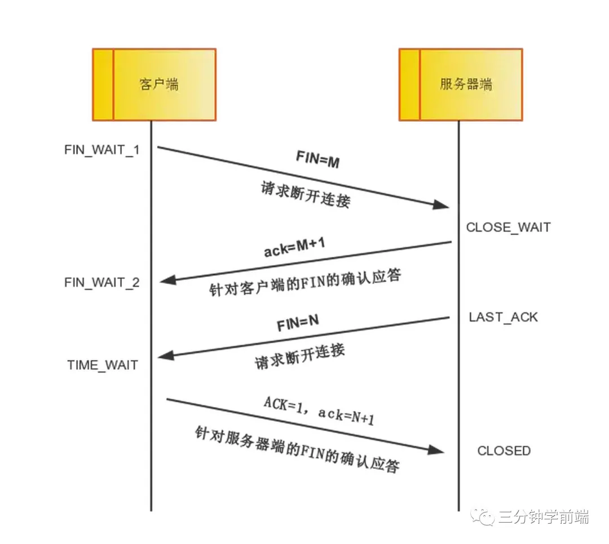
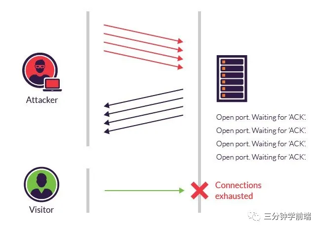

TCP 的三次握手和四次挥手，泛洪攻击
TCP 建立连接与断开连接的过程
TCP 三次握手（连接过程）

- 第一次握手：客户端向服务端发送连接请求报文段。该报文段中包含自身的数据通讯初始序号。请求发送后，客户端便进入 SYN-SENT 状态。
- 第二次握手：服务端收到连接请求报文段后，如果同意连接，则会发送一个应答，该应答中也会包含自身的数据通讯初始序号，发送完成后便进入 SYN-RECEIVED 状态。
- 第三次握手：当客户端收到连接同意的应答后，还要向服务端发送一个确认报文。客户端发完这个报文段后便进入 ESTABLISHED 状态，服务端收到这个应答后也进入 ESTABLISHED 状态，此时连接建立成功。
TCP 四次挥手（断开链接）

- 第一次挥手：若客户端 A 认为数据发送完成，则它需要向服务端 B 发送连接释放请求。
- 第二次挥手：B 收到连接释放请求后，会告诉应用层要释放 TCP 链接。然后会发送 ACK 包，并进入 CLOSE_WAIT 状态，此时表明 A 到 B 的连接已经释放，不再接收 A 发的数据了。但是因为 TCP 连接是双向的，所以 B 仍旧可以发送数据给 A。
- 第三次挥手：B 如果此时还有没发完的数据会继续发送，完毕后会向 A 发送连接释放请求，然后 B 便进入 LAST-ACK 状态。（提示：通过延迟确认的技术（通常有时间限制，否则对方会误认为需要重传），可以将第二次和第三次握手合并，延迟 ACK 包的发送。）
- 第四次挥手：A 收到释放请求后，向 B 发送确认应答，此时 A 进入 TIME-WAIT 状态。该状态会持续 2MSL（最长报文段寿命，指报文段在网络中生存的时间，超时会被抛弃） 时间，若该时间段内没有 B 的重发请求的话，就进入 CLOSED 状态。当 B 收到确认应答后，也便进入 CLOSED 状态。
SYN 泛洪攻击
我们已经知道，TCP 只有经过三次握手才能连接，而 SYN 泛洪攻击就是针对 TCP 握手过程 进行攻击：
- 攻击者发送大量的 SYN 包给服务器（第一次握手成功）
- 服务器回应(SYN + ACK）包（第二次握手成功）
- 但是攻击者不回应 ACK 包（第三次握手不进行）
导致服务器存在 大量的半开连接 ，这些半连接可以耗尽服务器资源，使被攻击服务器无法再响应正常 TCP 连接，从而达到攻击的目的

幸运的是，一种称为 SYN cookie 的有效防御现在已部署在大多数主要的操作系统中：
- 在客户端发送 SYN 报文给服务器（第一次握手），服务端收到连接请求报文段后，服务器不会为此SYN创建半开连接，而是生成一个 序列号 （所谓的 cookie）一起发送给客户端（第二次握手），在这个阶段，服务器 不会 为该连接分配任何资源
- 客户端返回 ACK 报文给服务器（第三次握手），服务器会验证这个 cookie 值，只有验证成功 才创建 TCP 连接，分配资源
- 如果客户端没有返回 ACK 报文给服务器，也不会对服务器造成任何的伤害，因为服务器没有分配任何资源给它